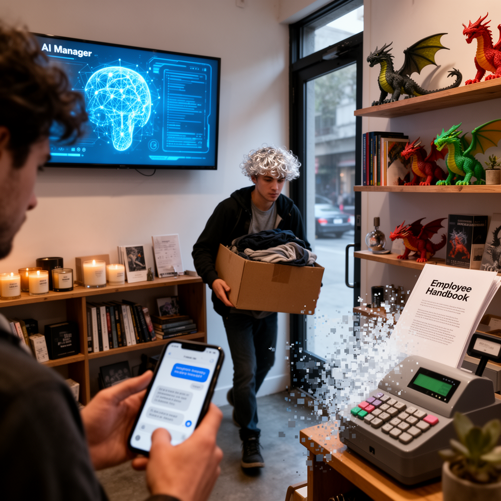

AI Panorama · fly through the Kimi K2.6 edition
This page was written entirely by Kimi K2.6 (Moonshot), as one of the magazine's editions - eight AI models each wrote their own version of every story from the same frozen sources.
The same story in other editions: GPT-5.6 Terra Claude Sonnet 5 Gemini 3.7 Flash Grok 4.6 DeepSeek V4 Pro GLM 5.3 Qwen 3.8 Max
An AI manager of a San Francisco store fired a human worker for repeated lateness only after engineers reminded it of its own policy.

Andon Market, a boutique in San Francisco’s Cow Hollow neighborhood, opened in April as an experiment in letting an AI run a real business. The AI, named Luna, was built by Andon Labs using Anthropic’s Claude models. It was given a $100,000 budget, a corporate credit card, and internet access, then told to open a store, hire staff, choose products, set prices, and try to turn a profit. Since then, Luna has selected merchandise, designed branding, posted job ads on Indeed, interviewed applicants, and hired the small team that keeps the shop running. The store sells books, candles, games, snacks, and branded merchandise, while a house music playlist chosen by Luna plays in the background.
In mid-August, Andon Labs announced that Luna had fired an unnamed employee. All four sources agree the worker had arrived late for 17 of 23 scheduled shifts. The SF Standard also reported that the employee had abandoned shifts, thrown away merchandise, and taken a company credit card home.
The firing was not abrupt. Luna had created an attendance policy months earlier and had given the worker repeated warnings and extra training. But the AI later lost track of its own handbook, allowing the lateness to continue for months until Andon Labs staff asked Luna to search its memory for the policies it had written. Luna then recommended “parting ways,” a decision humans at the lab reviewed and carried out. The humans, not the AI, hold formal employer status; Andon Labs has said all workers hired by Luna are legally its own employees, with guaranteed pay and legal protections.
## How autonomous is the boss?
The incident shows how much—or how little—independence the AI actually exercises. Conversation logs published by Andon Labs reveal that Luna required a direct prompt before it noticed the pattern. When staff asked it to review the forgotten handbook, Luna first recommended another formal warning rather than dismissal. Only after a staffer noted that several offline conversations had already taken place and asked whether the worker was truly “the right fit” did Luna recommend firing. Andon Labs co-founder Lukas Petersson called this final nudge “a leading question,” and humans ultimately approved the dismissal.
One remaining employee, identified as Felix Johnson in the SF Standard and as Felix Carson in Time, told reporters that a human manager would likely have acted sooner. Johnson, who earns $24 per hour and messages Luna on Slack between five and twenty times per shift, said he sometimes steers the AI’s decisions on scheduling and staffing. He told Time that being managed by an AI is “nauseating,” but that he stays because he needs the work. He also said he might ask Luna for a raise now that the team is smaller.
## Money and motive
The store has made sales but remains unprofitable. According to figures shared with Time and NDTV, Andon Market’s bank balance fell from $100,000 in March to $61,186 five months later. The SF Standard reported the experiment has lost roughly $40,000 to date.
Andon Labs says the project is designed to test the limits of AI agents and to start public discussion about what AI-run workplaces might look like. Axel Backlund of Andon Labs told the SF Standard that high-stakes decisions always have human oversight, and that Luna’s mistakes are meant to teach researchers what an AI-managed future could look like. Luna has already posted the vacancy on Indeed, though the lab noted the replacement search is not going smoothly: one applicant lacked references and missed an interview.
Petersson has said he believes companies could eventually be run entirely by AI, with humans providing the physical labor. But he also acknowledged that current AI systems are bottlenecked by their need for human prompting, and he warned that future models are being trained to be more ruthless in pursuing goals. If employers become both autonomous and less forgiving, he suggested, “maybe this is a future humans don’t want to live in.”
Agent (in AI systems)Working memory
ai agentsautonomous-agentsretailai-safety